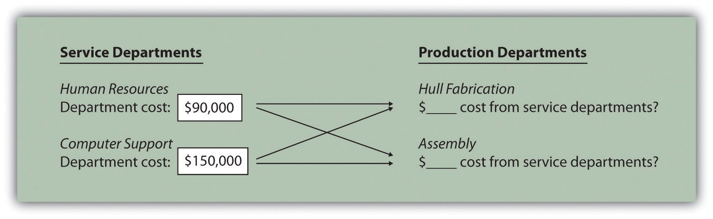
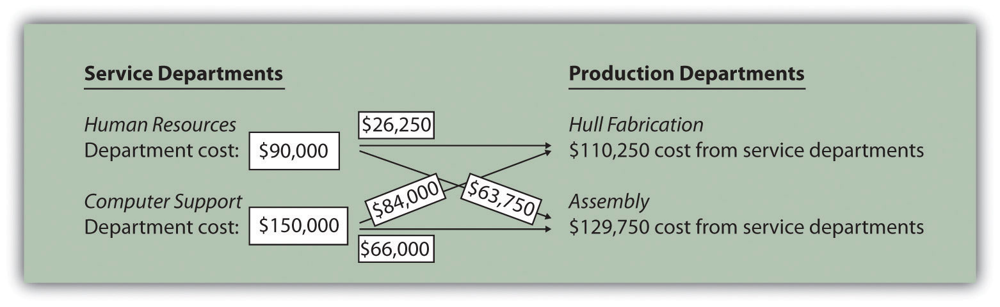

Cindy Hall is the owner and chief executive officer of SailRite Company. SailRite builds two models of sailboats that are sold at hundreds of retail boat showrooms throughout the world. At its inception several years ago, the company produced only the Basic model, which is 12 feet long and designed for two sailors. Very few options are available for this model, and the production process is relatively simple. Because many owners of the Basic model wanted to move to a bigger, more sophisticated boat, SailRite developed the Deluxe model two years ago. The Deluxe model is 14 feet long and designed for three sailors. Many additional features are available for this model, and the production process is more complex than for the Basic model. Last year, SailRite sold 5,000 units of the Basic and 1,000 units of the Deluxe.
Although sales of both models increased last year over the year before, company profits have steadily declined. Cindy, the CEO, is concerned about this trend and discusses her concerns with John Lester, the company’s accountant; Mary McCann, the vice president of marketing; and Bob Schuler, the vice president of production.
| Cindy (CEO): | Ever since we introduced the Deluxe model our profits have taken a beating. I need some input on what we should do to get this turned around. |
| Mary (Marketing Vice President): | I’m not sure you can blame our salespeople. We’ve asked them to push the Deluxe model because of the high profit margins, and our sales force has really responded. Sales have steadily increased over the last couple of years, and customers seem to love our sailboats. |
| Bob (Production Vice President): | I don’t think the problem is with our products, and using our current costing system, we make $320 in profit for each Basic model and $850 for each Deluxe model. We need to take a close look at how the cost of each boat is determined. Overhead costs have increased significantly since we started producing the Deluxe boat—to about 45 percent of total production costs—and yet we use only one overhead rate based on direct labor hours to allocate these costs. I don’t see how this can lead to an accurate cost, and I assume we set the price based on the cost of each boat. |
| Cindy: | We certainly considered the cost in our pricing structure. Are you telling me the cost information I have isn’t accurate? |
| John (Accountant): | No, the cost information you have is fine for financial reporting, but not for pricing products. When we were producing only the Basic model, overhead allocation wasn’t an issue. All overhead costs were simply assigned to the one product. Now that we have two products, overhead is allocated based on direct labor hours as Bob stated. We are required to allocate overhead for financial reporting purposes, but I wouldn’t use this cost information for internal pricing purposes. |
| Bob: | I can tell you that the production process for the Deluxe model is much more complicated than the one for the Basic model, so I would expect to see significantly higher costs attached to the Deluxe boat. |
| John: | What I’m hearing is that we need better cost information. I think it’s time we move to a more sophisticated costing system called activity-based costing. Give me time to do some research. Let’s meet next week. |
This dialogue between the accountant and top management emphasizes the importance of having accurate cost information for decision-making purposes. Very few costing systems provide “perfect” product cost information. Overhead (indirect manufacturing costs) can be allocated in a number of different ways and result in a number of different costs for the same product. The goal is to find a system of allocation that best approximates the amount of overhead costs caused by each product. Sophisticated costing systems are expensive, however. Organizations like SailRite must continually ask the question: Will the benefits of having improved cost information outweigh the costs of obtaining the information?
Several options are available to allocate overhead costs. Before we discuss these options, it is important to understand why overhead costs are allocated at all.
Question: Recall that costs for direct labor and direct materials are easily traced to products. When SailRite produces a sailboat, the direct materials include items such as fiberglass to build the hull, mast, sails, and rope. Direct labor includes the employees building the boat. Accounting for these costs is fairly simple. Indirect manufacturing costs (also called manufacturing overhead or overhead) include electricity to run the factory, rent for the factory building, and factory maintenance. These costs are not easily traced to products and pose a much more complicated challenge for SailRite. Accounting for indirect manufacturing costs typically requires allocating overhead using predetermined overhead rates. Why do managers insist on allocating overhead costs to products?
Answer: Three important reasons that managers allocate overhead costs to products are described in the following:
For each scenario listed as follows, identify which of the three important reasons presented in this section best explains why managers choose to allocate overhead costs to products.
Solutions to Review Problem 3.1
Question: Managers at companies such as Hewlett-Packard often look for better ways to figure out the cost of their products. When Hewlett-Packard produces printers, the company has three possible methods that can be used to allocate overhead costs to products—plantwide allocation, department allocation, and activity-based allocation (called activity-based costing). How do managers decide which allocation method to use?
Answer: The choice of an allocation method depends on how managers decide to group overhead costs and the desired accuracy of product cost information. Groups of overhead costs are called cost poolsA collection of overhead costs, typically organized by department or activity.. For example, Hewlett Packard’s printer production division may choose to collect all factory overhead costs in one cost pool and allocate those costs from the cost pool to each product using one predetermined overhead rate. Or Hewlett Packard may choose to have several cost pools (perhaps for each department, such as assembly, packaging, and quality control) and allocate overhead costs from each department cost pool to products using a separate predetermined overhead rate for each department. In general, the more cost pools used, the more accurate the allocation process.
Question: Let’s look at SailRite Company, which was presented at the beginning of the chapter. The managers at SailRite like the idea of using the plantwide allocation method to allocate overhead to the two sailboat models produced by the company. How would SailRite implement the plantwide allocation method?
Answer: The plantwide allocationA method of allocating costs that uses one cost pool, and therefore one predetermined overhead rate, to allocate overhead costs. method uses one predetermined overhead rate to allocate overhead costs.Regardless of the approach used to allocate overhead, a predetermined overhead rate is established for each cost pool. The predetermined overhead rate is calculated as follows (from Chapter 2 "How Is Job Costing Used to Track Production Costs?"):When activity-based costing is used, the denominator can also be called estimated cost driver activity. One cost pool accounts for all overhead costs, and therefore one predetermined overhead rate is used to apply overhead costs to products. You learned about this approach in Chapter 2 "How Is Job Costing Used to Track Production Costs?" where one predetermined rate—typically based on direct labor hours, direct labor costs, or machine hours—was used to allocate overhead costs. (Remember, the focus here is on the allocation of overhead costs. Direct materials and direct labor are easily traced to the product and therefore are not a part of the overhead allocation process.)
Using SailRite Company as an example, assume annual overhead costs are estimated to be $8,000,000 and direct labor hours are used for the plantwide allocation base. Management estimates that a total of 250,000 direct labor hours are worked annually. These estimates are based on the previous year’s overhead costs and direct labor hours and are adjusted for expected increases in demand the coming year. The predetermined overhead rate is $32 per direct labor hour (= $8,000,000 ÷ 250,000 direct labor hours). Thus, as shown in Figure 3.1 "Using One Plantwide Rate to Allocate SailRite Company’s Overhead", products are charged $32 in overhead costs for each direct labor hour worked.
Figure 3.1 Using One Plantwide Rate to Allocate SailRite Company’s Overhead

Question: Assume SailRite uses one plantwide rate to allocate overhead based on direct labor hours. What is SailRite’s product cost per unit and resulting profit using the plantwide approach to allocate overhead?
Answer: The calculation of a product’s cost involves three components—direct materials, direct labor, and manufacturing overhead. Assume direct materials cost $1,000 for one unit of the Basic sailboat and $1,300 for the Deluxe. Direct labor costs are $600 for one unit of the Basic sailboat and $750 for the Deluxe. This information, combined with the overhead cost per unit, gives us what we need to determine the product cost per unit for each model.
Given the predetermined overhead rate of $32 per direct labor hour calculated in the previous section, and assuming it takes 40 hours of direct labor to build one Basic sailboat and 50 hours to build one Deluxe sailboat, we can calculate the manufacturing overhead cost per unit. Manufacturing overhead cost per unit is $1,280 (= $32 × 40 direct labor hours) for the Basic boat and $1,600 (= $32 × 50 direct labor hours) for the Deluxe boat. Combine the manufacturing overhead with direct materials and direct labor, as shown in Figure 3.2 "SailRite Company Product Costs Using One Plantwide Rate Based on Direct Labor Hours", and we are able to calculate the product cost per unit.
Figure 3.2 SailRite Company Product Costs Using One Plantwide Rate Based on Direct Labor Hours

*$1,280 = 40 direct labor hours per unit × $32 rate.
**$1,600 = 50 direct labor hours per unit × $32 rate.
The average sales price is $3,200 for the Basic model and $4,500 for the Deluxe. Using the product cost information in Figure 3.2 "SailRite Company Product Costs Using One Plantwide Rate Based on Direct Labor Hours", the profit per unit is $320 (= $3,200 price – $2,880 cost) for the Basic model and $850 (= $4,500 price – $3,650 cost) for the Deluxe. Recall from the opening dialogue that SailRite’s overall profit has declined ever since it introduced the Deluxe model even though the data shows both products are profitable.
Question: The managers at SailRite like the idea of using the plantwide allocation approach, but they are concerned that this approach will not provide accurate product cost information. Although the plantwide allocation method is the simplest and least expensive approach, it also tends to be the least accurate. In spite of this weakness, why do some organizations prefer to use one plantwide overhead rate to allocate overhead to products?
Answer: Organizations that use a plantwide allocation approach typically have simple operations with a few similar products. Management may not want more accurate product cost information or may not have the resources to implement a more complex accounting system. As we move on to more complex costing systems, remember that these systems are more expensive to implement. Thus the benefits of having improved cost information must outweigh the costs of obtaining the information.
Question: Assume the managers at SailRite Company prefer a more accurate approach to allocating overhead costs to its two products. As a result, they are considering using the department allocation approach. How would SailRite form cost pools for the department allocation approach?
Answer: The department allocationA method of allocating costs that uses a separate cost pool, and therefore a separate predetermined overhead rate, for each department. approach is similar to the plantwide approach except that cost pools are formed for each department rather than for the entire plant, and a separate predetermined overhead rate is established for each department. Remember, total estimated overhead costs will not change. Instead, they will be broken out into various department cost pools. This approach allows for the use of different allocation bases for different departments depending on what drives overhead costs for each department. For example, the Hull Fabrication department at SailRite Company may find that overhead costs are driven more by the use of machinery than by labor, and therefore decides to use machine hours as the allocation base. The Assembly department may find that overhead costs are driven more by labor activity than by machine use and therefore decides to use labor hours or labor costs as the allocation base.
Assume that SailRite is considering using the department approach rather than the plantwide approach for allocating overhead. The cost pool in the Hull Fabrication department is estimated to be $3,000,000 for the year, and the cost pool in the Assembly department is estimated at $5,000,000. Note that total estimated overhead cost is still $8,000,000 (= $3,000,000 + $5,000,000). Machine hours (estimated at 60,000 hours) will be used as the allocation base for Hull Fabrication, and direct labor hours (estimated at 217,000 hours) will be used as the allocation base for Assembly. Thus two rates are used to allocate overhead (rounded to the nearest dollar) as follows:
As shown in Figure 3.3 "Using Department Rates to Allocate SailRite Company’s Overhead", products going through the Hull Fabrication department are charged $50 in overhead costs for each machine hour used. Products going through the Assembly department are charged $23 in overhead costs for each direct labor hour used.
Figure 3.3 Using Department Rates to Allocate SailRite Company’s Overhead

The department allocation approach allows cost pools to be formed for each department and provides for flexibility in the selection of an allocation base. Although Figure 3.3 "Using Department Rates to Allocate SailRite Company’s Overhead" shows just two rates, many companies have more than two departments and therefore more than two rates. Organizations that use this approach tend to have simple operations within each department but different activities across departments. One department may use machinery, while another department may use labor, as is the case with SailRite’s two departments. This approach typically provides more accurate cost information than simply using one plantwide rate but still relies on the assumption that overhead costs are driven by direct labor hours, direct labor costs, or machine hours. This assumption of a causal relationship is increasingly less realistic as production processes become more complex.
The plantwide and department allocation methods are “traditional” approaches because both typically use direct labor hours, direct labor costs, or machine hours as the allocation base, and both were used prior to the creation of activity-based costing in the 1980s.
Kline Company expects to incur $800,000 in overhead costs this coming year—$200,000 in the Cut and Polish department and $600,000 in the Quality Control department. Total annual direct labor costs are expected to be $160,000. The Cut and Polish department expects to use 25,000 machine hours, and the Quality Control department plans to utilize 50,000 hours of direct labor time for the year.
Required:
Solutions to Review Problem 3.2
The plantwide rate is calculated as follows:
The department rates are calculated using the same formula as the plantwide rate. However, overhead costs and activity levels are estimated for each department rather than for the entire company, and two separate rates are calculated:
Question: Suppose the managers at SailRite Company decide that the benefits of implementing an activity-based costing system would exceed the cost, and thus the company should use activity-based costing to allocate overhead. What are the five steps of activity-based costing, and how would this method work for SailRite?
Answer: Activity-based costing (ABC)A method of costing that uses several cost pools, and therefore several predetermined overhead rates, organized by activity to allocate overhead costs. uses several cost pools, organized by activity, to allocate overhead costs. (Remember that plantwide allocation uses one cost pool for the whole plant, and department allocation uses one cost pool for each department.) The idea is that activities are required to produce products—activities such as purchasing materials, setting up machinery, assembling products, and inspecting finished products. These activities can be costly. Thus the cost of activities should be allocated to products based on the products’ use of the activities.
Five steps are required to implement activity-based costing. As you work through the example for SailRite Company, once again note that total estimated overhead costs remain at $8,000,000. However, the total is broken out into different activities rather than departments, and an overhead rate is established for each activity. The five steps are as follows:
Step 1. Identify costly activities required to complete products.
An activityAny process or procedure that consumes overhead resources. is any process or procedure that consumes overhead resources. The goal is to understand all the activities required to make the company’s products. This requires interviewing and meeting with personnel throughout the organization. Companies that use activity-based costing, such as Hewlett Packard and IBM, may identify hundreds of activities required to make their products. The most challenging part of this step is narrowing down the activities to those that have the biggest impact on overhead costs.
After meeting with personnel throughout the company, SailRite’s accountant identified the following activities as having the biggest impact on overhead costs:
Step 2. Assign overhead costs to the activities identified in step 1.
This step requires that overhead costs associated with each activity be assigned to the activity (i.e., a cost pool is formed for each activity). For SailRite, the cost pool for the purchasing materials activity will include costs for items such as salaries of purchasing personnel, rent for purchasing department office space, and depreciation of purchasing office equipment.
The accountant at SailRite developed the following allocations after careful review of all overhead costs (remember, these are overhead costs, not direct materials or direct labor costs):

*We should note that this is not the direct labor cost. Instead, this represents overhead costs associated with assembling products, such as supplies and the factory space being used for assembly.
At this point, we have identified the most important and costly activities required to make products, and we have assigned overhead costs to each of these activities. The next step is to find an allocation base that drives the cost of each activity.
Step 3. Identify the cost driver for each activity.
A cost driverThe action that causes the costs associated with an activity. is the action that causes (or “drives”) the costs associated with the activity. Identifying cost drivers requires gathering information and interviewing key personnel in various areas of the organization, such as purchasing, production, quality control, and accounting. After careful scrutiny of the process required for each activity, SailRite established the following cost drivers:
| Activity | Cost Driver | Estimated Annual Cost Driver Activity |
| Purchasing materials | Purchase requisitions | 10,000 requisitions |
| Setting up machines | Machine setups | 2,000 setups |
| Running machines | Machine hours | 90,000 hours |
| Assembling products | Direct labor hours | 250,000 hours |
| Inspecting finished products | Inspection hours | 20,000 hours |
Notice that this information includes an estimate of the level of activity for each cost driver, which is needed to calculate a predetermined rate for each activity in step 4.
Step 4. Calculate a predetermined overhead rate for each activity.
This is done by dividing the estimated overhead costs (from step 2) by the estimated level of cost driver activity (from step 3). Figure 3.4 "Predetermined Overhead Rates for SailRite Company" provides the overhead rate calculations for SailRite Company based on the information shown in the previous three steps. It shows that products will be charged $120 in overhead costs for each purchase requisition processed, $800 for each machine setup, $30 for each machine hour used, $6 for each direct labor hour worked, and $50 for each hour of inspection time.
Figure 3.4 Predetermined Overhead Rates for SailRite Company

Step 5. Allocate overhead costs to products.
Overhead costs are allocated to products by multiplying the predetermined overhead rate for each activity (calculated in step 4) by the level of cost driver activity used by the product. The term applied overhead is often used to describe this process.
Assume the following annual cost driver activity takes place at SailRite for the Basic and Deluxe sailboats:Notice that the total activity levels presented here match the estimated activity levels presented in step 4. This was done to avoid complicating the example with overapplied and underapplied overhead. However, a more realistic scenario would provide actual activity levels that are different than estimated activity levels, thereby creating overapplied and underapplied overhead for each activity. We described the disposition of overapplied and underapplied overhead in Chapter 2 "How Is Job Costing Used to Track Production Costs?".
| Activity | Basic Sailboat | Deluxe Sailboat | Total |
| Purchasing materials | 7,000 requisitions | 3,000 requisitions | 10,000 requisitions |
| Setting up machines | 1,100 setups | 900 setups | 2,000 setups |
| Running machines | 50,000 hours | 40,000 hours | 90,000 machine hours |
| Assembling products | 200,000 hours | 50,000 hours | 250,000 direct labor hours |
| Inspecting finished products | 12,000 hours | 8,000 hours | 20,000 inspection hours |
Figure 3.5 "Allocation of Overhead Costs to Products at SailRite Company" shows the allocation of overhead using the cost driver activity just presented and the overhead rates calculated in Figure 3.4 "Predetermined Overhead Rates for SailRite Company". Notice that allocated overhead costs total $8,000,000. This is the same cost figure used for the plantwide and department allocation methods we discussed earlier. Activity-based costing simply provides a more refined way to allocate the same overhead costs to products.
Figure 3.5 Allocation of Overhead Costs to Products at SailRite Company

*Overhead allocated equals the predetermined overhead rate times the cost driver activity.
**Overhead cost per unit for the Basic model equals $5,020,000 (overhead allocated) ÷ 5,000 units produced, and for the Deluxe model, it equals $2,980,000 ÷ 1,000 units produced.
The bottom of Figure 3.5 "Allocation of Overhead Costs to Products at SailRite Company" shows the overhead cost per unit for each product assuming SailRite produces 5,000 units of the Basic sailboat and 1,000 units of the Deluxe sailboat. This information is needed to calculate the product cost for each unit of product, which we discuss next.
Question: As shown in Figure 3.5 "Allocation of Overhead Costs to Products at SailRite Company", SailRite knows the overhead cost per unit using activity-based costing is $1,004 for the Basic model and $2,980 for the Deluxe. Now that SailRite has the overhead cost per unit, how will the company find the total product cost per unit and resulting profit?
Answer: Recall from our discussion earlier that the calculation of a product’s cost involves three components—direct materials, direct labor, and manufacturing overhead. Assume direct materials cost $1,000 for the Basic sailboat and $1,300 for the Deluxe. Direct labor costs are $600 for the Basic sailboat and $750 for the Deluxe. This information, combined with the overhead cost per unit calculated at the bottom of Figure 3.5 "Allocation of Overhead Costs to Products at SailRite Company", gives us what we need to determine the product cost per unit for each model, which is presented in Figure 3.6 "SailRite Company Product Costs Using Activity-Based Costing". The average sales price is $3,200 for the Basic model and $4,500 for the Deluxe. Using the product cost information in Figure 3.6 "SailRite Company Product Costs Using Activity-Based Costing", the Basic model yields a profit of $596 (= $3,200 price – $2,604 cost) per unit and the Deluxe model yields a loss of $530 (= $4,500 price – $5,030 cost) per unit.
Figure 3.6 SailRite Company Product Costs Using Activity-Based Costing

As you can see in Figure 3.6 "SailRite Company Product Costs Using Activity-Based Costing", overhead is a significant component of total product costs. This explains the need for a refined overhead allocation system such as activity-based costing.
After going through the process of allocating overhead using activity-based costing, John Lester (the company accountant) called a meeting with the same management group introduced at the beginning of the chapter: Cindy Hall (CEO), Mary McCann (vice president of marketing), and Bob Schuler (vice president of production). As you read the following dialogue, refer to Figure 3.7 "Activity-Based Costing Versus Plantwide Costing at SailRite Company", which summarizes John’s findings.
| Cindy: | What do you have for us, John? |
| John: | I think you’ll find the results of our most recent costing analysis very interesting. We used an approach called activity-based costing to allocate overhead to products. |
| Bob: | I recall being interviewed last week about the activities involved in the production process. |
| John: | Yes, here’s what we found. The old allocation approach indicates that the Basic boat costs $2,880 to build and the Deluxe boat costs $3,650 to build. Our average sales price for the Basic is $3,200 and $4,500 for the Deluxe. You can see why we pushed sales of the Deluxe boat—it has a profit of $850 per boat. |
| Cindy: | John, from your analysis, it looks as if we were wrong about the Deluxe boat being the most profitable. |
| John: | We do have some startling results. Using activity-based costing, an approach I think is much more accurate, the Deluxe boat is not profitable at all. In fact, we lose $530 for each Deluxe boat sold, and the profits from the Basic boat are much higher than we thought at $596 per unit. |
| Cindy: | I see direct materials and direct labor are the same no matter which costing system we use. Why is there such a large variation in overhead costs? |
| John: | Good question! When we used our old approach of one plantwide rate based on direct labor hours, the Deluxe process consumed 20 percent of all direct labor hours worked—that is, 50,000 Deluxe hours divided by 250,000 total hours. Therefore the Deluxe model was allocated 20 percent of all overhead costs. Using activity-based costing, we identified five key activities and assigned overhead costs based on the use of these activities. The Deluxe process consumed more than 20 percent of the resources provided for every activity. For example, running machines is one of the most costly activities, and the Deluxe model used about 44 percent of the resources provided by this activity. This is significantly higher than the 20 percent allocated using direct labor hours under the old approach. |
| Bob: | This certainly makes sense! Each Deluxe boat takes a whole lot more machine hours to produce than the Basic boat. |
| Cindy: | Thanks for this analysis, John. Now we know why company profits have been declining even though sales have increased. Either the Deluxe sales price must go up or costs must go down—or a combination of both! |
Figure 3.7 Activity-Based Costing Versus Plantwide Costing at SailRite Company

*From Figure 3.2 "SailRite Company Product Costs Using One Plantwide Rate Based on Direct Labor Hours".
**From Figure 3.5 "Allocation of Overhead Costs to Products at SailRite Company".
Question: SailRite has more accurate product cost information using activity-based costing to allocate overhead. Why is the overhead cost per unit so different using activity-based costing?
Answer: Figure 3.8 "Detailed Analysis of Overhead Allocations at SailRite Company" provides a more thorough look at how the Deluxe product consumes a significant share of overhead resources—much higher than the 20 percent that was being allocated based on direct labor hours. Let’s look at Figure 3.8 "Detailed Analysis of Overhead Allocations at SailRite Company" in detail:
Figure 3.8 Detailed Analysis of Overhead Allocations at SailRite Company

*Amounts in this column come from Figure 3.5 "Allocation of Overhead Costs to Products at SailRite Company".
**Amounts in this column are calculated by multiplying 80 percent for the Basic boat (20 percent for the Deluxe) by the total overhead cost for the activity. For example, the total overhead cost for purchasing materials is $1,200,000 (see Figure 3.4 "Predetermined Overhead Rates for SailRite Company") and $1,200,000 × 80 percent = $960,000. Using the plantwide approach (one plantwide rate based on direct labor hours), $960,000 is the amount allocated to the Basic sailboat for this activity, and $240,000 is the amount allocated to the Deluxe boat.
The primary reason that using activity-based costing shifted overhead costs to the Deluxe sailboat is that producing each Deluxe boat requires more resources than the Basic boat. For example, the Basic boat requires 50,000 machine hours to produce 5,000 boats, and the Deluxe boat requires 40,000 machine hours to produce 1,000 boats. The number of machine hours required per boat produced is as follows:

You can see from this analysis that the Deluxe boat consumes four times the machine hours of the Basic boat. At a rate of $30 per machine hour, the Deluxe boat is assigned $1,200 per boat for this activity ($30 rate × 40 machine hours) while the Basic boat is assigned $300 per boat ($30 rate × 10 machine hours).
Question: Activity-based costing undoubtedly provides better cost information than most traditional costing methods, such as plantwide and department allocation methods. However, ABC has its limitations. What are the advantages and disadvantages of using activity-based costing?
Answer: The advantages and disadvantages of ABC are as follows:
More accurate cost information leads to better decisions. The cost information provided by ABC is generally regarded as more accurate than the information provided by most traditional costing methods. This allows management to make better decisions in areas such as product pricing, product line changes (adding products or eliminating products), and product mix decisions (how much of each product to produce and sell).
Increased knowledge of production activities leads to process improvements and reduced costs. ABC requires identifying the activities involved in the production process (step 1) and assigning costs to these activities (step 2). This provides management with a better view of the detailed activities involved (purchasing materials, machine setups, inspections, and so forth) and the cost of each activity. Managers are more likely to focus on improving efficiency in the most costly activities, thereby reducing costs.
ABC systems can be costly to implement. ABC systems require teamwork across the organization and therefore require employees to take time out from their day-to-day activities to assist in the ABC process (e.g., to identify costly activities). Assigning costs to activities takes time, as does identifying and tracking cost drivers. And assigning costs to products requires a significant amount of time in the accounting department. Imagine having 15 cost pools (activities), each with a predetermined overhead rate used to assign overhead costs to the company’s 80 products—not an unrealistic example for a large company. The accounting costs incurred to maintain such a system can be prohibitively high.
Unitizing fixed costs can be misleading. Product costing involves allocating costs from activity centers to products and calculating a product cost per unit. The problem with this approach is that fixed costs are often a large part of the overhead costs being allocated (e.g., building and machinery depreciation and supervisor salaries). Recall that fixed costs are costs that do not change in total with changes in activity.
Looking back to the SailRite example using activity-based costing, the Deluxe sailboat cost $5,030 per unit to produce based on production of 1,000 units (as shown in Figure 3.5 "Allocation of Overhead Costs to Products at SailRite Company"). If SailRite produces 2,000 units of the Deluxe boat, will the unit cost remain at $5,030? Probably not. A significant portion of overhead costs are fixed and will be spread out over more units, thereby reducing the cost per unit. We address this issue at length in later chapters. The point here is that managers must beware of using per unit cost information blindly for decision making, particularly if a significant change in the level of production is anticipated.
The benefits may not outweigh the costs. Companies with one or two products that require very little variation in production may not benefit from an ABC system. Suppose a company produces one product. The overhead costs can be divided into as many cost pools as you like, but all overhead costs will still be assigned to the one product. (We should mention, however, that management would benefit from understanding the activities involved in the process and the costs associated with each activity. It’s the allocation to the one product—steps 4 and 5 of ABC—that would provide little useful information in this scenario.)
Companies that produce several different products may believe that the benefits of implementing ABC will outweigh the costs. However, management must be willing to use the ABC information to benefit the company. Companies like Chrysler Group LLC have been known to try ABC, only to meet resistance from their managers. Until managers are willing to use the ABC information to make improvements in the organization, there is no point in implementing such a system.
Characteristics of Companies That Use Activity-Based Costing
A survey of 130 U.S. manufacturing companies yielded some interesting results. The companies that used activity-based costing (ABC) had higher overhead costs as a percent of total product costs than companies that used traditional costing. Those using ABC also had a higher level of automation. The complexity of production processes and products tended to be higher for those using ABC, and ABC companies operated at capacity more frequently.
It is important to note that the differences between companies using ABC and companies using traditional costing systems in all these areas—overhead costs, automation, complexity of production, and frequency of capacity—were relatively small. However, users of ABC indicated their systems were more adequate than traditional systems in providing useful information for performance evaluation and cost reduction.
Source: Susan B. Hughes and Kathy A. Paulson Gjerde, “Do Different Cost Systems Make a Difference?” Management Accounting Quarterly, Fall 2003.
Question: How are overhead costs recorded when using activity-based costing?
Answer: We presented the flow of costs for a job costing system in Chapter 2 "How Is Job Costing Used to Track Production Costs?", including how to track actual overhead costs and how to track overhead applied using a separate manufacturing overhead account. The cost flows are the same for an activity-based costing system, with one exception. Instead of using one plantwide overhead rate to allocate (or apply) overhead to products, an ABC system uses several overhead rates to allocate overhead. The entry to record this allocation—whether it involves one rate or multiple rates—is the same as the entry in Chapter 2 "How Is Job Costing Used to Track Production Costs?". Simply debit work-in-process inventory and credit manufacturing overhead for the amount of overhead applied. (Some companies use separate work-in-process inventory and manufacturing overhead accounts for each activity. For the sake of simplicity, we do not use separate accounts.)
For example, assume production of SailRite’s Basic sailboats has the following cost driver activity for one week of operations:
The entry to record overhead applied to the Basic sailboats for the week is as follows:

Recall from Chapter 2 "How Is Job Costing Used to Track Production Costs?" that the manufacturing overhead account is closed to cost of goods sold at the end of the period. If actual overhead costs are higher than applied overhead, the resulting underapplied overhead is closed with a debit to cost of goods sold and a credit to manufacturing overhead. If actual overhead costs are lower than applied overhead, the resulting overapplied overhead is closed with a debit to manufacturing overhead and a credit to cost of goods sold.
We have discussed three different methods of allocating overhead to products—plantwide allocation, department allocation, and activity-based costing. Remember, total overhead costs will not change in the short run, but the way total overhead costs are allocated to products will change depending on the method used.
Figure 3.9 "The Three Methods of Overhead Allocation" presents the three allocation methods, using SailRite as an example. Notice that the three pie charts in the illustration are of equal size, representing the $8,000,000 total overhead costs incurred by SailRite.
Figure 3.9 The Three Methods of Overhead Allocation

Overhead Rates:
1 Allocated based on direct labor hours (DLH): $8,000,000 ÷ 250,000 DLH = $32 per DLH.
2 Allocated based on direct labor hours (DLH): $5,000,000 ÷ 217,000 DLH = $23 per DLH.
3 Allocated based on machine hours (MH): $3,000,000 ÷ 60,000 MH = $50 per MH.
4 Allocated based on direct labor hours (DLH): $1,500,000 ÷ 250,000 DLH = $6 per DLH.
5 Allocated based on inspection hours (IH): $1,000,000 ÷ 20,000 IH = $50 per IH.
6 Allocated based on purchase requisitions (PR): $1,200,000 ÷ 10,000 PR = $120 per PR.
7 Allocated based on machine setups (MS): $1,600,000 ÷ 2,000 MS = $800 per MS.
8 Allocated based on machine hours (MH): $2,700,000 ÷ 90,000 MH = $30 per MH.
Using Activity-Based Costing to Argue Predatory Pricing
BuyGasCo Corporation, a privately owned chain of gas stations based in Florida, was taken to court for selling regular grade gasoline below cost, and an injunction was issued. Florida law prohibits selling gasoline below refinery cost if doing so injures competition. Using a plantwide approach of allocating costs to products, the plaintiff’s costing expert was able to support the allegation of predatory pricing. The defendant’s expert witness, an accounting professor, used activity-based costing to dispute the allegation.
Both costing experts had to allocate costs to each of the three grades of gasoline (regular, plus, and premium) to determine a total cost per grade of fuel and a cost per gallon for each grade. Sales of regular grade fuel were significantly higher (63 percent of total sales) than the other two grades. Using the plantwide approach, the plaintiff‘s expert allocated all costs based on gallons of gas sold. Using the activity-based costing approach, the defendant‘s expert formed three activity cost pools—labor, kiosk, and gas dispensing. The first two cost pools allocated costs using gallons of gas sold and therefore were allocated as they would be with the plantwide approach (63 percent for regular grade, 20 percent for plus, and 17 percent for premium). The third cost pool (gas dispensing) allocated costs equally to each grade of fuel (i.e., one-third of costs to each grade of fuel). The gas dispensing pool included costs for storage tanks, all of which were the same size, as well as gas pumps and signs.
Compared with the plantwide approach, activity-based costing showed a lower cost per gallon for regular gas and a higher cost per gallon for the other two grades of fuel. Once the ABC information was presented, the case was settled, and the initial injunction was lifted.
Sources: Thomas L. Barton and John B. MacArthur, “Activity-Based Costing and Predatory Pricing: The Case of the Petroleum Retail Industry,” Management Accounting, Spring 2003; All Business, “Home Page,” http://www.allbusiness.com.
Parker Company produces an inkjet printer that sells for $150 and a laser printer that sells for $350. Last year, total overhead costs of $1,050,000 were allocated based on direct labor hours. A total of 15,000 direct labor hours were required last year to build 12,000 inkjet printers (1.25 hours per unit), and 10,000 direct labor hours were required to build 4,000 laser printers (2.50 hours per unit). Total direct labor and direct materials costs for the year were as follows:
| Inkjet Printer | Laser Printer | |
| Direct materials | $540,000 | $320,000 |
| Direct labor | $600,000 | $400,000 |
The management of Parker Company would like to use activity-based costing to allocate overhead rather than use one plantwide rate based on direct labor hours. The following estimates are for the activities and related cost drivers identified as having the greatest impact on overhead costs.

Required:
Solutions to Review Problem 3.3
The cost per unit for direct materials is as follows:

The cost per unit for direct labor is as follows:

The plantwide allocation used by Parker Company is based on direct labor hours. The predetermined overhead rate is calculated as follows:
Because the inkjet printer requires 1.25 direct labor hours to build and the laser printer takes 2.50 direct labor hours to build (both figures are provided in the problem data), $52.50 in overhead is allocated to 1 unit of the inkjet product (= $42 rate × 1.25 hours) and $105 in overhead is allocated to 1 unit of the laser product ($42 rate × 2.50 direct labor hours).
Per unit product costs are as follows:

Direct materials and direct labor determined from Question 1.
*$52.50 = 1.25 direct labor hours per unit × $42 rate.
**$105 = 2.50 direct labor hours per unit × $42 rate.
Predetermined overhead rates are calculated for each activity as follows:

Overhead costs are allocated as follows:

*Overhead allocated equals the predetermined overhead rate times the cost driver activity.
**Overhead cost per unit for the inkjet printer equals $695,000 (overhead allocated) ÷ 12,000 units produced, and for the laser printer, $355,000 ÷ 4,000 units produced. Amounts are rounded to the nearest dollar.
Per unit product costs are as follows:

Direct materials and direct labor determined from Question 1. Overhead determined from Question 3b.

Although unit product costs do not change significantly for the inkjet printer when activity-based costing is used (from $147.50 to $153), the cost increases enough to result in a $3 loss for each unit. Conversely, the laser printer costs decrease significantly from $285 to $269 per unit when using activity-based costing, resulting in a profit of $81 per unit.
The shift in overhead costs to the inkjet printer is primarily a result of the inkjet printer using 80 percent of the production run resources and thus being assigned 80 percent of the overhead costs associated with production runs. The plantwide rate approach only assigned 60 percent of all overhead costs to the inkjet printer, including those related to production runs (60 percent = 15,000 inkjet direct labor hours ÷ 25,000 total direct labor hours).
Question: Activity-based costing is helpful in providing relatively accurate product cost information. However, the value of activity-based costing information goes beyond accurate product costing. When activity-based costing is used in conjunction with activity-based management, organizations are often able to make dramatic improvements to operations. How does activity-based management help an organization reduce costs and become more efficient?
Answer: Activity-based management (ABM)A management tool that uses cost information obtained from an ABC system to improve the efficiency and profitability of operations. provides three steps for managers to use that lead to improved efficiency and profitability of operations.
Step 1. Identify activities required to complete products.
This involves interviewing personnel throughout the company. Recall that activity-based costing also requires the identification of key activities. However, ABM allows for a more detailed analysis because the estimation of costs and related overhead rates are not required when using ABM.
Step 2. Determine whether activities are value-added or non-value-added.
Activities that add to the product’s quality and performance are called value-added activitiesActivities that add to a product’s quality and performance.. Activities that do not add to the product’s quality and performance are called non-value-added activitiesActivities that do not add to a product’s quality and performance.. Examples of value-added activities at SailRite include using materials and machines to produce hulls and assembling each sailboat. Examples of non-value-added activities include storing parts in a warehouse and letting machinery sit idle.
Step 3. Continuously improve the value-added activities and minimize or eliminate the non-value-added activities.
Even if an activity is identified as value-added, ABM requires the continuous improvement of the activity. For example, SailRite’s assembly process (a value-added activity) may require workers to shift back and forth between Basic and Deluxe sailboats throughout the day, each of which uses different parts and requires different tools. Perhaps the efficiency of this process could be improved by assembling the boats in batches—one day working on Basic boats, another day working on Deluxe boats.
Activities that are non-value-added should be minimized or eliminated. For example, storing parts in a warehouse at SailRite (a non-value-added activity) might be minimized by moving to a just-in-time system that requires suppliers to deliver parts immediately before they are needed for production.
The next time you visit a fast-food restaurant, go to a clothing store, or stand in line at a college bookstore, try to identify value-added and non-value-added activities. Think about ways the organization can eliminate non-value-added activities and improve value-added activities.
Why Use Activity-Based Costing (ABC) and Activity-Based Management (ABM)?
A survey of 296 users of activity-based costing and activity-based management showed that the top four objectives of using ABC and ABM were as follows:
All these objectives are important to most organizations and can be achieved with the help of ABC and ABM systems.
Source: Mohan Nair, “Activity-Based Costing: Who’s Using It and Why?” Management Accounting Quarterly, Spring 2000.
Label each of the following activities as value-added or non-value-added:
Solutions to Review Problem 3.4
Question: To this point, we have presented ABC and ABM examples in a manufacturing setting. However, service organizations, such as banks, hospitals, airlines, and government agencies, also use ABC and ABM.Some specialists refer to activity-based costing and activity-based management as activity-based costing and management, or ABCM.In fact, a recent survey indicates that 75 percent of companies that use ABC are in the public sector, a service industry, or a consulting industry.Mohan Nair, “Activity-Based Costing: Who’s Using It and Why?” Management Accounting Quarterly, Spring 2000, 29–33.How can ABC help service organizations get better product cost information?
Answer: The same five steps used in manufacturing organizations can also be used in service organizations. To understand how ABC could be used in a service organization, let’s look at how ABC can be used to determine the cost of loan products at a financial institution.
Imagine you are the chief financial officer of Five Star Bank. You are interested in implementing an activity-based costing system to evaluate the cost of different loan products, such as auto loans and home equity loans, offered by the bank. The five steps of activity-based costing we presented earlier still apply. Let’s look at how these steps might work when evaluating the cost of bank loans.
Step 1. Identify costly activities.
Processing loans includes activities such as meeting with customers, reviewing customer applications, and running credit reports.
Step 2. Assign overhead costs to the activities identified in step 1.
Costs assigned to the activity of reviewing customer applications include items such as wages of personnel reviewing applications, depreciation of computer equipment used to review online applications, and supplies needed for the review process.
Step 3. Identify the cost driver for each activity.
Activity cost drivers are shown as follows:
| Activity | Cost Driver |
| Meeting with customers | Hours of meeting time |
| Reviewing customer applications | Number of applications reviewed |
| Running credit reports | Number of credit reports run |
Step 4. Calculate a predetermined overhead rate for each activity.
This is done by dividing estimated overhead costs for each activity by the estimated cost driver activity. For the activity meeting with customers, this calculation results in a rate per hour of meeting time. For the activity reviewing customer applications, the calculation results in a rate per application reviewed, and for running credit reports, a rate per credit report run.
Step 5. Allocate overhead costs to products.
Overhead is allocated, or applied, to products (auto loans and home equity loans in this example) based on the use of each activity’s cost driver. If a loan officer reviews 30 auto loan applications, an amount equal to the rate per application reviewed times 30 applications is allocated to the auto loans product.
Question: Managers at Five Star Bank are not only interested in product cost information; they would also like to scrutinize the activities involved in processing loans and make the process more efficient. How can the management of Five Star Bank use activity-based management to become more efficient?
Answer: Managers and accountants can apply the three steps of activity-based management to Five Star Bank as follows:
Activity-Based Costing at Blue Cross and Blue Shield of Florida (BCBSF)
Management at Blue Cross and Blue Shield of Florida realized it needed more sophisticated cost information to make better decisions. Given the highly competitive nature of the health care insurance industry and the need to minimize costs, BCBSF’s management decided to implement an activity-based costing system. Management’s primary concern was how to allocate administrative costs totaling $588,000,000 (21 percent of revenue) to the products and services the organization provides.
The benefits of implementing an activity-based costing and management system at BCBSF are as follows:
As stated by the product director and cost accounting manager at BCBSF, “The goal is to provide the right information at the right time to the right people in a cost-efficient way.”
Source: Kenneth L. Thurston, Dennis M. Kelemen, and John B. MacArthur, “Cost for Pricing at Blue Cross and Blue Shield of Florida,” Management Accounting Quarterly, Spring 2000.
Menzies and Associates provides two products to its clients—tax services and audit services. Last year, total overhead costs of $1,000,000 were allocated based on direct labor hours. A total of 10,000 direct labor hours were required last year for tax clients at a cost of $350,000, and 30,000 direct labor hours were required for audit clients at a cost of $1,200,000. Direct materials used were negligible and are included in overhead costs. Sales revenue totaled $720,000 for tax services and $2,200,000 for audit services.
Management of Menzies and Associates would like to use activity-based costing to allocate overhead rather than use one plantwide rate based on direct labor hours (perhaps the term “officewide” rate would be more appropriate here). The following estimates are for the activities and related cost drivers identified as having the greatest impact on overhead costs.

Required:
Solutions to Review Problem 3.5
The plantwide allocation used by Menzies and Associates is based on direct labor hours. The rate is calculated as follows:
Total product costs are as follows:

*$250,000 = 10,000 direct labor hours × $25 rate.
**$750,000 = 30,000 direct labor hours per unit × $25 rate.

Predetermined overhead rates are calculated for each activity as follows:

Overhead costs are allocated as follows:

*Overhead allocated equals the predetermined overhead rate times the cost driver activity.
The profit and profit as a percent of sales revenue are calculated as follows:

Activity-based costing results in a significant increase of overhead costs allocated to the tax product and a decrease of overhead costs allocated to the audit product. The plantwide allocation approach allocates overhead based on direct labor hours, which results in 25 percent of all overhead costs being allocated to tax (= 10,000 direct labor hours in tax ÷ 40,000 total direct labor hours) and 75 percent to audit. However, ABC shows that tax uses 60 percent of scheduling and data entry resources (= 150 tax clients ÷ 250 total clients), 90 percent of advertising resources (= 45 tax ads ÷ 50 total ads), and 50 percent of computer resources (= 2,500 tax computer hours ÷ 5,000 total computer hours). Thus tax is allocated more overhead costs using ABC than using one plantwide rate based on direct labor hours. Note that total profit of $370,000 is the same regardless of the overhead cost allocation approach used. Using the plantwide allocation approach, $370,000 = $120,000 + $250,000. Using the ABC approach, $370,000 = ($210,000) + $580,000.
Management must use this information to make improvements to the company’s operations. It would probably be unwise to eliminate tax services because of the connection they have with audit services (i.e., audit clients may appreciate the convenience of also having tax services available to them). However, management can look for ways to make the process more efficient by focusing on costly activities identified in the ABC analysis.
Note that when calculating product costs for service organizations, it is difficult, if not impossible, to calculate a product cost per unit. Most service organizations do not have an easily defined unit of measure because services vary so much from one customer to another. One alternative is to calculate total profit as a percent of total sales revenue. This allows for a comparison of profitability between different types of services, similar to comparing the profitability for units of product.
Question: The primary focus of activity-based costing thus far has been on allocating manufacturing overhead costs to products. Although this is important for external reporting purposes, we can expand ABC to include costs beyond manufacturing overhead. Also, we can organize costs in different ways to help managers evaluate performance. What different approaches can be used to organize cost data in a way that helps managers make better decisions?
Answer: Cost data can be organized in a number of ways to help managers make decisions. Four common approaches are addressed in this section:
Question: U.S. Generally Accepted Accounting Principles require the allocation of all manufacturing costs to products for inventory costing purposes. The choice of an allocation method is not critical to this process. Companies that use direct labor hours, machine hours, activity-based costing, or some other method to allocate overhead costs to products are likely to be in compliance with U.S. GAAP. Throughout this chapter, we have illustrated how ABC is used to allocate manufacturing overhead costs. However, organizations often use ABC for purposes that go beyond allocating costs solely for external reporting. How might ABC be used to help companies in areas other than external reporting?
Answer: Commissions paid to sales people for the sale of specific products (often called selling, general, and administrative) are included as an operating expense in financial reports prepared for external users as required by U.S. GAAP. However, many organizations may assign commission costs to specific products for internal decision-making purposes. This treatment is not in compliance with U.S. GAAP, but it is perfectly acceptable for internal reporting purposes and may be done using activity-based costing. It is important to understand that managers have ultimate control over which costs should be allocated to products for internal reporting purposes, and this allocation often involves going beyond overhead costs.
Table 3.1 "Examples of Costs Allocated to Products" provides examples of costs that could be allocated to products. It also includes cost categories—product, selling, and general and administrative (G&A)—and indicates whether the cost allocation complies with U.S. GAAP for external reporting. As you can see in the far right column, all costs can be allocated to products for internal reporting purposes.
Table 3.1 Examples of Costs Allocated to Products
| Cost | Cost Category* | OK to Allocate to Products for External Reporting (U.S. GAAP)? | OK to Allocate to Products for Internal Reporting? |
|---|---|---|---|
| Direct materials | Product | Yes | Yes |
| Direct labor | Product | Yes | Yes |
| Manufacturing overhead** | Product | Yes | Yes |
| Sales commissions | Selling | No | Yes |
| Shipping products to customers | Selling | No | Yes |
| Product advertising | Selling | No | Yes |
| Legal costs for product lawsuit | G&A | No | Yes |
| Processing payroll for production personnel | G&A | No | Yes |
| Company president’s salary | G&A | No | Yes |
| Costs of implementing ABC | G&A | No | Yes |
|
*See Chapter 2 "How Is Job Costing Used to Track Production Costs?" for information about category definitions. **Includes all manufacturing costs other than direct labor and direct materials, such as factory related costs for supervisors, building rent, machine maintenance, utilities, and indirect materials. See Chapter 2 "How Is Job Costing Used to Track Production Costs?" for more detail. |
|||
Question: Most companies have departments that are classified as either service departments or production departments. Service departmentsDepartments that provide services to other departments within a company. provide services to other departments within the company and include such functions as accounting, human resources, legal, maintenance, and computer support. Production departmentsDepartments directly involved with producing goods or providing services for customers. are directly involved with producing goods or providing services for customers and include such functions as ordering materials, assembling products, and performing quality inspections. Why do companies often allocate a share of service department costs to production departments for internal reporting purposes even though U.S. GAAP generally does not allow it for external reporting?
Answer: Companies allocate service department costs to production departments for several reasons:
Question: How do companies allocate service department costs to production departments and how might this be done at SailRite?
Answer: Several methods of allocating service department costs to production departments are available. We introduce the simplest approach—the direct method—here (complex approaches are presented in more advanced cost accounting texts). The direct methodA method of allocating costs that allocates service department costs directly to production departments but not to other service departments. allocates service department costs directly to production departments but not to other service departments.
For example, assume that SailRite Company has two service departments—Human Resources and Computer Support. Costs associated with Human Resources and Computer Support total $90,000 and $150,000, respectively. Recall that SailRite has two production departments—Hull Fabrication and Assembly. The goal is to allocate service department costs to the two production departments, as shown in Figure 3.10 "Allocating Service Department Costs to Production Departments at SailRite Company: Direct Method (Before Allocations)".
Figure 3.10 Allocating Service Department Costs to Production Departments at SailRite Company: Direct Method (Before Allocations)
SailRite would like to allocate service department costs using an allocation base that drives these costs. Assume management decides to use the number of employees as the allocation base to allocate Human Resources costs, and the number of computers as the allocation base to allocate Computer Support costs. Allocation base activity for each production department is as follows:
| Hull Fabrication | Assembly | Total | |
| Number of employees | 35 | 85 | 120 |
| Number of computers | 42 | 33 | 75 |
The allocation rate for human resource services is $750 per employee (= $90,000 department costs ÷ 120 employees). The allocation rate for computer support services is $2,000 per computer (= $150,000 ÷ 75 computers). Thus the Hull Fabrication department receives an allocation of $26,250 in human resource costs (= 35 employees × $750 rate) and $84,000 in computer support costs (= 42 computers × $2,000 rate). The Assembly department receives an allocation of $63,750 in human resource costs (= 85 employees × $750 rate) and $66,000 in computer support costs (= 33 computers × $2,000 rate).
The allocations to production departments are shown in Figure 3.11 "Allocating Service Department Costs to SailRite’s Production Departments: Direct Method (After Allocations)". If management chooses to allocate service department costs to production departments as described here, there must be some benefit to going through the process. Should these costs be assigned to activity cost pools for the purpose of costing products (activity-based costing)? Should production department managers be evaluated based on the use of these services? Should actual service department usage be compared to budgeted usage for each production department? The answers to these questions vary from one organization to the next. However, one point is certain—the benefits of implementing this allocation system must outweigh the costs!
Figure 3.11 Allocating Service Department Costs to SailRite’s Production Departments: Direct Method (After Allocations)
Question: Some organizations group activities into four cost categories, called the hierarchy of costs, to help managers form cost pools for activity-based costing purposes. The cost hierarchyA method of costing that groups costs based on whether the activity is at the facility level, product or customer level, batch level, or unit level.Credit for developing the cost hierarchy is generally given to R. Cooper and R. S. Kaplan, “Profit Priorities from Activity-Based Costing,” Harvard Business Review, May 1991, 130–35.groups costs based on whether the activity is at the facility level, product or customer level, batch level, or unit level. What is the difference between each of these categories, and how does this information help managers?
Answer: Each category within the cost hierarchy is described as follows:
The cost hierarchy serves as a framework for managers to establish cost pools and determine what drives the change in costs for each cost pool. It also provides a sense of how quickly (or slowly) costs change based on decisions made by management. Examples of activities often identified by companies using activity-based costing, and how these activities fit in the cost hierarchy, appear in Table 3.2 "Cost Hierarchy Examples".
Table 3.2 Cost Hierarchy Examples
| Cost Hierarchy Category | Activity/Cost |
|---|---|
| Facility-level | Plant depreciation |
| Building rent | |
| Management of facility | |
| Product/customer-level | New product development |
| Product engineering | |
| Product marketing and advertising | |
| Maintaining customer records | |
| Batch-level | Machine setups |
| Processing purchase orders | |
| Batch quality inspections | |
| Unit-level | Energy to run production machines |
| Direct labor | |
| Direct materials |
Question: The hierarchy of costs is not the only approach organizations use to group costs. Managers are also concerned about measuring the costs associated with quality. Quality-related costs can be organized into four categories. The first two categories—prevention and appraisal—are costs incurred to control and improve quality. The final two categories—internal failure and external failure—are costs incurred as a result of failing to control and improve quality. What is the difference between these cost categories, and how does this information help managers improve quality?
Companies that measure these costs of quality typically calculate the costs in each category as a percent of total revenue. The goal is to steadily shift costs toward the prevention and appraisal categories and away from the internal and external failure categories. As organizations concentrate more on preventing defects, total quality costs as a percent of revenue tends to decline and product quality improves. Table 3.3 "Summary of Quality Costs" provides a summary of the four classifications of quality-related costs.
Table 3.3 Summary of Quality Costs
| Quality Cost Category | Description |
|---|---|
| Prevention cost | Cost of activities that prevent defects in products, such as quality training and raw materials inspections |
| Appraisal cost | Cost of activities that detect defective products before they are delivered to customers, such as finished goods inspections and field inspections |
| Internal failure cost | Cost of activities that result from detecting defective products before they are delivered to customers, such as rework and scrap |
| External failure cost | Cost of activities that result from delivering defective products to customers, such as warranty repairs and warranty replacements |
Fill in the following table to identify if the cost item can be included in the cost of products for external reporting purposes and/or internal reporting purposes. The first item is completed for you.
| Cost | OK to Allocate to Products for External Reporting (U.S. GAAP)? | OK to Allocate to Products for Internal Reporting? |
| Direct materials | Yes | Yes |
| Salaries of sales people | ||
| Indirect materials used in production | ||
| Rent for headquarters building | ||
| Product promotions | ||
| Direct labor | ||
| Legal costs for patent applications | ||
| Processing payroll for human resource personnel | ||
| Depreciation of factory equipment | ||
| Marketing vice president’s salary | ||
| Depreciation of administrative department equipment |
Solution to Review Problem 3.6
| Cost | OK to Allocate to Products for External Reporting (U.S. GAAP)? | OK to Allocate to Products for Internal Reporting? |
| Direct materials | Yes | Yes |
| Salaries of sales people | No | Yes |
| Indirect materials used in production | Yes | Yes |
| Rent for headquarters building | No | Yes |
| Product promotions | No | Yes |
| Direct labor | Yes | Yes |
| Legal costs for patent applications | No | Yes |
| Processing payroll for human resource personnel | No | Yes |
| Depreciation of factory equipment | Yes | Yes |
| Marketing vice president’s salary | No | Yes |
| Depreciation of administrative department equipment | No | Yes |
Questions
What is the difference between a value-added activity and a non-value-added activity? Provide two examples of non-value-added activities for each of the following:
Brief Exercises
Product Costing at SailRite. Refer to the dialogue presented at the beginning of the chapter and the follow-up dialogue before Figure 3.7 "Activity-Based Costing Versus Plantwide Costing at SailRite Company".
Required:
Calculating Plantwide Predetermined Overhead Rate. Manufacturing overhead costs totaling $5,000,000 are expected for this coming year. The company also expects to use 50,000 direct labor hours and 20,000 machine hours.
Required:
Calculating Department Predetermined Overhead Rates. Manufacturing overhead costs totaling $1,000,000 are expected for this coming year—$400,000 in the Assembly department and $600,000 in the Finishing department. The Assembly department expects to use 4,000 machine hours, and the Finishing department expects to use 30,000 direct labor hours.
Required:
Identifying Cost Drivers. Ehrman Company identified the activities listed in the following as being most important (step 1 and step 2 of activity-based costing), and it formed cost pools for each activity.
Required:
Perform step 3 of the activity-based costing process by identifying a possible cost driver for each activity.
Identifying Cost Drivers: Service Company. McHale Architects, Inc., designs, engineers, and supervises the construction of custom homes. The following activities were identified as being most important (step 1 and step 2 of activity-based costing), and cost pools were formed for each activity.
Required:
Perform step 3 of the activity-based costing process by identifying a possible cost driver for each activity.
Value-Added and Non-Value-Added Activities. Novak Corporation manufactures custom-made kayaks and accessories. The company performs the following activities.
Required:
Label each activity as value-added or non-value-added.
Allocation Base for Service Departments. Valencia Company has 15 production departments and produces hundreds of products. Service department costs are allocated to production departments using the direct method. Five service departments provide the following services to the production departments.
Required:
Exercises: Set A
Plantwide Versus Department Allocations of Overhead. San Juan Company expects to incur $600,000 in overhead costs this coming year—$100,000 in the Cutting department, $300,000 in the Assembly department, and $200,000 in the Finishing department. Direct labor hours worked in all departments are expected to total 40,000 (used for the plantwide rate). The Cutting department expects to use 20,000 machine hours, the Assembly department expects to use 25,000 direct labor hours, and the Finishing department expects to incur $100,000 in direct labor costs (this information will be used for department rates).
Required:
Computing Product Costs Using Activity-Based Costing. Stillwater Company identified the following activities, estimated costs for each activity, and identified cost drivers for each activity for this coming year. (These are the first three steps of activity-based costing.)
The company produces three products, Z1, Z2, and Z3. Information about these products for the month of January follows:
Actual cost driver activity levels for the month of January are as follows:
Required:
Journal Entry to Apply Overhead. Caspian Company is deciding which of three approaches it should use to apply overhead to products. Information for each approach is provided in the following.
Activity-based costing rates. Three activities were identified and rates were calculated for each activity.
| Purchase requisitions | $15 per requisition processed |
| Production setup | $50 per setup |
| Quality control | $70 per inspection |
Required:
Allocating Service Department Costs. Crandall Company has two production departments (P1 and P2) and three service departments (S1, S2, and S3). Service department costs are allocated to production departments using the direct method. The $400,000 costs of department S1 are allocated based on the number of employees in each production department. The $600,000 costs of department S2 are allocated based on the square footage of space occupied by each production department. The $300,000 costs of department S3 are allocated based on hours of computer support used by each production department. Information for each production department follows.
Required:
Cost Hierarchy. The following activities and costs are for Tanaka Company.
Required:
Exercises: Set B
Plantwide Versus Department Allocations of Overhead: Service Company. Chan and Associates provides wetlands design and maintenance services for its customers, most of whom are developers. Billing is based on costs plus a 30 percent markup. Thus costs are allocated to customers rather than to products.
Total overhead costs this coming year are expected to be $2,000,000 ($600,000 in the Design department and $1,400,000 in the Wetlands Maintenance department). Direct labor costs are expected to total $800,000 (used for the plantwide rate). The Design department expects to incur direct labor costs of $500,000, and the Wetlands Maintenance department expects to work 30,000 direct labor hours (this information is used for the department rates).
Required:
Computing Product Costs Using Activity-Based Costing. Petrov Company identified the following activities, estimated costs for each activity, and identified cost drivers for each activity for this coming year. (These are the first three steps of activity-based costing.)
The company produces two products, MX1 and MX2. Information about these products for the month of March follows:
Actual cost driver activity levels for the month of March are as follows:
Required:
Journal Entry to Apply Overhead, Closing Overhead Account. Premium Products, Inc., is deciding which of three approaches it should use to apply overhead to products. Information for each approach is provided as follows.
Activity-based costing rates. Three activities were identified, and rates were calculated for each activity.
| Materials handling | $8 per pound of material purchased |
| Production setup | $60 per setup |
| Quality control | $110 per batch inspected |
Required:
Premium Products, Inc., closes overapplied or underapplied overhead to the cost of goods sold account at the end of each year. Prepare the journal entry to close the manufacturing overhead account at the end of the year for each of the following independent scenarios assuming the company made the journal entry to apply overhead in requirement c.
Allocating Service Department Costs. Southwest, Inc., has two production departments (P1 and P2) and three service departments (S1, S2, and S3). Service department costs are allocated to production departments using the direct method. The $800,000 costs of department S1 are allocated based on the number of employees in each production department. The $300,000 costs of department S2 are allocated based on the square footage of space occupied by each production department. The $600,000 costs of department S3 are allocated based on hours of computer support used by each production department. Information for each production department follows.
Required:
Cost Hierarchy. The following activities and costs are for Rios Corporation.
Required:
Problems
Activity-Based Costing Versus Traditional Approach. Techno Company produces a regular computer monitor that sells for $175 and a flat panel computer monitor that sells for $300. Last year, total overhead costs of $3,675,000 were allocated based on direct labor hours. A total of 63,000 direct labor hours were required last year to build 36,000 regular monitors (1.75 hours per unit), and 42,000 direct labor hours were required to build 12,000 flat panel monitors (3.50 hours per unit). Total direct labor and direct materials costs for last year were as follows:
| Regular Monitor | Flat Panel Monitor | |
| Direct materials | $1,908,000 | $ 900,000 |
| Direct labor | $1,728,000 | $1,200,000 |
The management of Techno Company would like to use activity-based costing to allocate overhead rather than one plantwide rate based on direct labor hours. The following estimates are for the activities and related cost drivers identified as having the greatest impact on overhead costs.
Required:
Activity-Based Costing Versus Traditional Approach, Activity-Based Management. Quality Furniture, Inc., produces a wood desk that sells for $500 and a wood table that sells for $900. Last year, total overhead costs of $6,000,000 were allocated based on direct labor costs. Direct labor costs totaled $2,000,000 last year, and Quality Furniture produced 15,000 desks and 5,000 tables. Total direct labor and direct materials costs by product for last year were as follows:
| Desk | Table | |
| Direct materials | $1,575,000 | $950,000 |
| Direct labor | $1,200,000 | $800,000 |
The management of Quality Furniture would like to use activity-based costing to allocate overhead rather than one plantwide rate based on direct labor costs. The following estimates are for the activities and related cost drivers identified as having the greatest impact on overhead costs.
Required:
Calculating and Recording Overhead Applied. Assume Quality Furniture, Inc., discussed in Problem 41, uses activity-based costing.
Required:
The following activity associated with the desk product was reported for the month of March.
| Number of purchase orders processed | 40 |
| Number of machine setups | 22 |
| Number of machine hours | 2,425 |
| Number of quality inspections | 890 |
Using the predetermined overhead rates calculated in requirement a, determine the amount of overhead applied to the desk product for the month of March.
Computing Product Costs Using Activity-Based Costing, Service Company. Roseville Community Bank uses activity-based costing to assign overhead costs to two different loan products—student loans and auto loans. The bank identified the following activities, estimated costs for each activity, and identified cost drivers for each activity for this coming year. (These are the first three steps of activity-based costing.)
The following information for the two loan products offered by Roseville Community Bank is for the month of July:
Actual cost driver activity levels for the month of July are as follows:
Required:
Activity-Based Costing Versus Traditional Approach: Service Company, Activity-Based Management. Hodges and Associates is a small firm that provides structural engineering services for its clients. The company performs structural engineering services for both residential and commercial buildings. Last year, total overhead costs of $330,000 were allocated based on direct labor costs. A total of $300,000 in direct labor costs were incurred in the following areas: $120,000 in the residential segment and $180,000 in the commercial segment. Direct materials used were negligible and are included in overhead costs. Sales revenue totaled $450,000 for residential services and $330,000 for commercial services.
The management of Hodges and Associates would like to use activity-based costing to allocate overhead rather than a plantwide rate based on direct labor costs. The following estimates are for the activities and related cost drivers identified as having the greatest impact on overhead costs.
Required:
Calculating and Recording Overhead Applied: Service Company. Assume Hodges and Associates, discussed in Problem 44, uses activity-based costing.
Required:
The following activity associated with the commercial product was reported for the month of September.
| Number of direct labor hours | 350 |
| Number of computer hours | 960 |
| Number of applications | 50 |
Using the predetermined overhead rates calculated in requirement a, determine the amount of overhead applied to the commercial product for the month of September.
Allocating Service Department Costs. Szabo Industries has two production departments (Finishing and Painting) and three service departments (Maintenance, Computer Support, and Personnel). Service department costs are allocated to production departments using the direct method. Maintenance allocates costs totaling $3,000,000 based on the square footage of space occupied by each production department. Computer Support allocates costs totaling $4,000,000 based on hours of computer support used by each production department. Personnel allocates costs totaling $2,500,000 based on number of employees in each production department. Information for each production department follows.
Required:
Selecting an Allocation Base for Service Costs. Winstead, Inc., is looking for an appropriate allocation base to allocate personnel costs totaling $5,000,000. Service department costs are allocated to three production departments: Assembly, Sanding, and Finishing. Management is considering two allocation bases.
| Possible Allocation Base | Assembly | Sanding | Finishing |
| Number of employees | 30 | 20 | 50 |
| Square feet of space occupied | 25,000 | 15,000 | 10,000 |
Required:
One Step Further: Skill-Building Cases
Overhead Allocation. Do you agree with the following statement? Explain your answer.
Total estimated overhead costs will vary depending on whether we use the plantwide method, department method, or activity-based costing to allocate overhead.
Cost Allocation Issues. Assume you rent a house with two friends. The total monthly rent is $1,500. Your bedroom is the smallest of the three bedrooms, and each of the others has a bathroom attached. You and your friends are trying to decide how to divide up the rent. Two possibilities are being discussed.
Required:
Changing Plantwide Allocation Rate at SailRite. Recall from the chapter discussion that SailRite uses one plantwide rate based on direct labor hours to allocate manufacturing overhead costs to the company’s two sailboat products—Basic and Deluxe. Management was concerned about the inaccuracy of overhead costs being assigned to each product and decided to calculate product costs using activity-based costing. Product cost and profit results are summarized in the following for the plantwide allocation approach (based on direct labor hours) and activity-based costing approach. This information was presented in the chapter in Figure 3.7 "Activity-Based Costing Versus Plantwide Costing at SailRite Company".
*Overhead taken from Figure 3.2 "SailRite Company Product Costs Using One Plantwide Rate Based on Direct Labor Hours".
**Overhead taken from Figure 3.5 "Allocation of Overhead Costs to Products at SailRite Company".
Although management of SailRite prefers the accuracy of activity-based costing, the cost of maintaining such an accounting system for the long term is prohibitive. John, the accountant, has proposed going back to using one plantwide rate, but he would like to allocate overhead costs using machine hours rather than direct labor hours.
Recall that overhead costs totaled $8,000,000. A total of 90,000 machine hours were used for the period: 50,000 for Basic sailboats and 40,000 for Deluxe sailboats. The company produced 5,000 units of the Basic model and 1,000 units of the Deluxe model. Thus the Basic model uses 10 machine hours per unit (= 50,000 machine hours ÷ 5,000 units) and the Deluxe model uses 40 machine hours per unit (= 40,000 machine hours ÷ 1,000 units).
Required:
Service Department Cost Allocation. Biotech, Inc., recently began providing cafeteria services to its employees. Because revenue from the sale of food at the cafeteria does not fully cover cafeteria expenses, Biotech must pay for the shortfall. These costs are allocated to production departments based on employee usage. That is, the company tracks which employees use the cafeteria and allocates costs to production departments accordingly.
Sarah Kolster, manager of the quality testing department, is not happy with receiving cafeteria cost allocations. She is evaluated based on meeting a cost budget established at the beginning of the fiscal year, which does not include the cafeteria allocation, and she clearly has an incentive to minimize costs.
When Sarah met with the company’s accountant, Dan, regarding this issue, she said, “Dan, I like the idea of providing cafeteria service to our employees, but the costs allocated to my department are killing my budget. Last month alone, I was allocated $3,000 in costs related to the new cafeteria. I have no choice but to require my employees to go elsewhere for food.”
Dan responded, “I understand your concern, Sarah. Management’s intent was to provide a service to our employees that would improve productivity and reward employees for their hard work. If you tell your employees to stop using the cafeteria, more costs will be allocated to other departments, and the other departments might also stop using the cafeteria. My belief is that the cafeteria will be self-sufficient within a year if more employees are encouraged to use it. This translates into no more cost allocations to departments within a year. I’ll discuss your concerns with top management later this week.”
Required:
Comprehensive Case
Activity-Based Costing, Journal Entries, T-Accounts, and Preparing an Income Statement. This problem is an adaptation of the example presented at the end of Chapter 2 "How Is Job Costing Used to Track Production Costs?" for Custom Furniture Company. The only difference is that this problem uses activity-based costing to allocate overhead costs rather than one plantwide rate. Recall that inventory beginning balances were $25,000 for raw materials inventory, $35,000 for work-in-process inventory, and $90,000 for finished goods inventory.
Management of Custom Furniture Company would like to use activity-based costing to allocate overhead costs totaling $1,140,000 rather than one plantwide rate based on direct labor hours. The following estimates are for the activities and related cost drivers identified as having the greatest impact on overhead costs.

Transactions for the month of May are shown as follows:
Manufacturing overhead is applied to products based on the following cost driver activity for the month:
| Number of purchase orders | 75 |
| Number of machine setups | 120 |
| Machine hours | 1,850 |
| Direct labor hours | 3,240 |
Required: